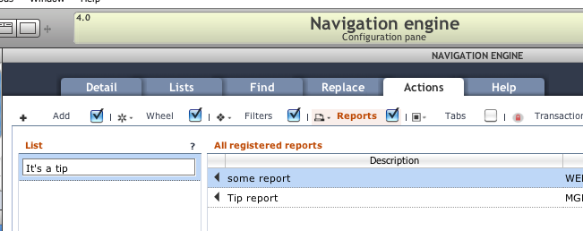

Reporting
There are many ways to create reports for Servoy solutions. However you choose to generate your reports, in the end Data Sutra needs a PDF to display within our web client.
Our API has two main methods to preview and download pdf’s and several methods to convert sources to PDFByteArrays to pass into the main methods.
User experience
Our in-browser pdf viewer is a slightly modified version of http://mozilla.github.com/pdf.js/. Some of the main features are:
- same look on all browsers
- print preview with buttons to print and open in another window
- works on tablets
- easy jump to a page and page thumbnails
- view zooming
- searching
API
scopes.DS.print…
- preview (reportName,source)
- download (reportName,source)
- trigger (registry)
- utils
- convertToPDFByteArray
- fromServoyForm(formName)
- fromHTMLData(html)
- fromHTMLURL(url)
- getPDFByteArray
- fromFileSystem(location)
- fromMediaLibrary(location)
- convertToPDFByteArray
Report registry
Data Sutra has a configuration pane for reports. Once your reports are
registered, they can be assigned to the reports action button in the
navigation engine.
Dedicated reporting module
We recommend that you create a module dedicated to reports for your particular solution and/or client. This keeps your report code in one place and separated out from all of your other business logic. As you will see in the following sections, wiring in reports from your module to various places in the UI is easily done with Data Sutra configuration panes.
Configuration pane: Report registry
Each record represents a report and has options about where the report is coming from and how it should be run.
If your report is based on a Servoy form, choose the module and form.
- If you specify a method, that method is run when the user chooses the report. You are responsible for calling our API to preview or download the report in your method. This approach allows for complex reporting logic.
- If you don’t specify a method, we apply a default printing action to the specified form and show it in our pdf previewer. Simple reporting logic.
- If you check the checkbox, we throw up a dialog asking the user to
select
record | foundset | current search results. This is passed to your method (if specified) or our wrapper will react accordingly. Adds some basic options to the simple reporting logic.
As of 4.0.2, we’ve added a URL data point. If not null, it will be passed into your specified method. If no method, our wrapper will automatically show the URL in our pdf previewer.
Lastly, the key column is there so you can reference a registered
report with the scopes.DS.print.trigger(key) api method. This enables
you to run a report from within your own business logic.
Assigning reports into the UI
There are two places where reports can be triggered from: from our
reports action button or your business code.
Configuring reports action button
Once a report is registered, it is available to be assigned to any
reports action button. Reports action buttons are accessed in the
Navigation engine configuration pane, then Actions tab, then
Reports tab.
Click the checkbox on the Reports tab to turn the reports action
button on.
The configuration pane shows a list of registered reports and a list of reports assigned. Move items from the registered reports list to the reports assigned list and enter a label name that will be displayed in the popup menu for that report.

Triggering a report from your code
Use trigger(key) api method to run any registered report from within your own business logic. This method will run the report with all the options specified in the report registry.
Reporting approaches
Copied from Scott Buttler’s Servoy forum post: https://www.servoy.com/forum/viewtopic.php?f=9&t=19350\#p104122
Built-in
You can build Servoy Forms using Title Headers, Headers, Footers, Summary, etc and build a report. This model’s the FileMaker Pro way of doing thing if you are familiar with that.
Manual
You can of course retrieve the data on your own, and write data our in HTML, Excel, or PDF. This is old school and should generally not be done.
Jasper Reports
This is really the standard for reporting in Servoy and is now the vast majority of users do it. You can use a visual iReport design tool which will connect to your data via raw SQL, FoundSets, or DataSets, and can pass parameters into the report.
Velocity Reports
This is an open source plugin using the Velocity Engine. Reports are built in XHTML using special templating functions
https://www.servoyforge.net/projects/velocity-report
Velocity vs Jasper/iReports discussion: https://www.servoy.com/forum/viewtopic.php?f=15&t=19448
Any other SQL Tool
Since Servoy connects to a SQL Database, you can use other tools and call them, like SQL Server Reporting Services, Crystal Reports, etc.